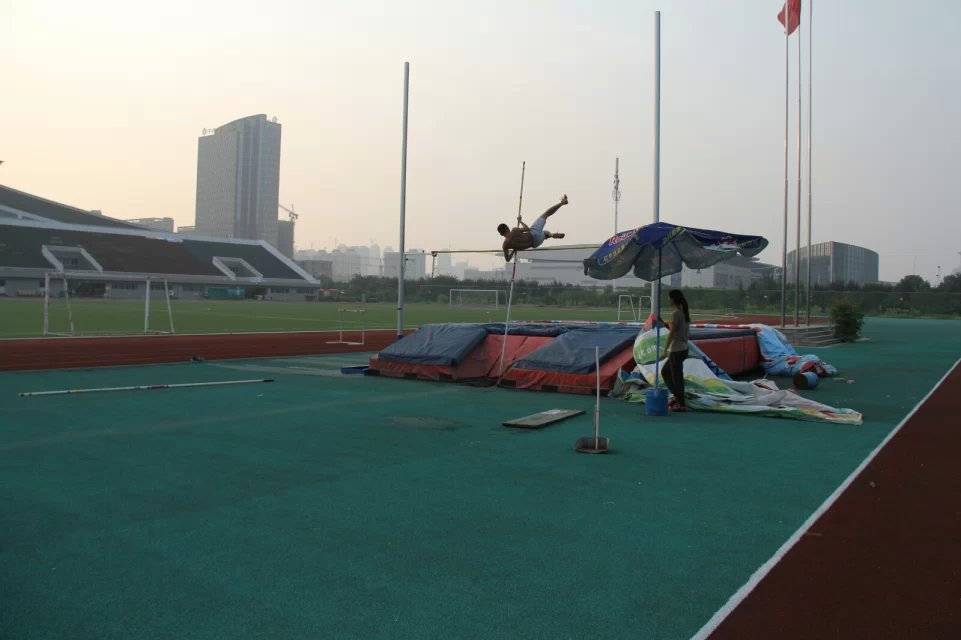
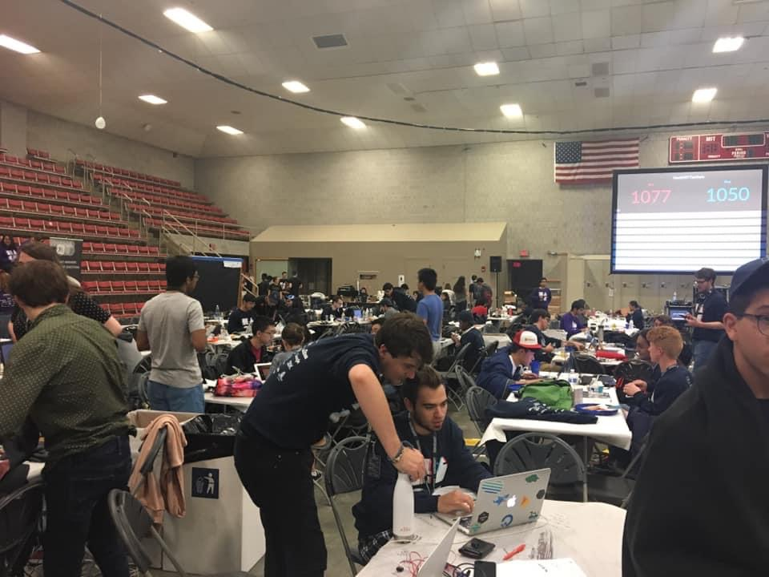

Jan.2023-Dec.2024: University of Nebraska- Lincoln
Master Of Computer Science
Stay tuned for more...
Aug.2015-May.2018: University of Nebraska- Lincoln
Bachelor of Computer Science
I had 3.415 GPA. I joined my first ever standard regional ACM programming contest in St.Joseph (Maybe I spell it wrongly) Missouri, my team got 3rd place out of 25 teams, I solved 2.5 out of 4 questions.
I attend a lot of Hackathon, MinneHack(U of Minnesota), HackMIT, HackWashU,lots of good memory
When I graduated and started working, I self taught GRE and got 320 points, 152 and 168 I think, pretty average but I was proud of it.


Aug.2013-May.2015: Anhui Normal University
Software Engineering
I represent AHNU to join the 14th Anhui Sports Game, won 8th place in Pole Vaulting, and won 1 points for my school. My height in the end was 2.9 meters.
In the same summer when I was training for pole vaulting, I was practicing TOEFL test, I remembered I got 54 for the first time, and finally got 82.